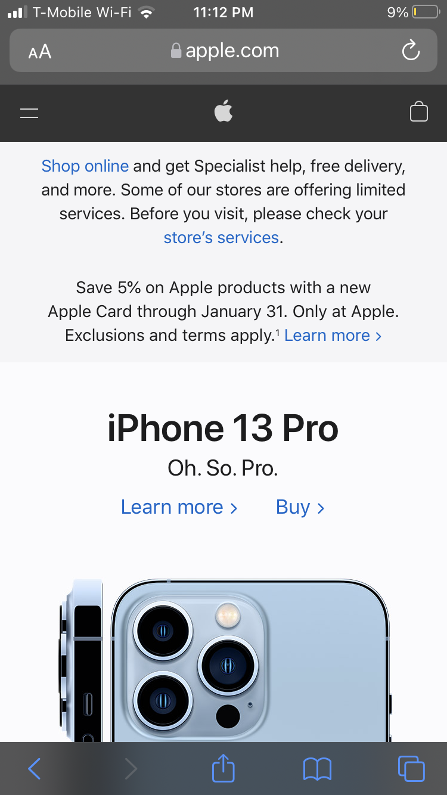
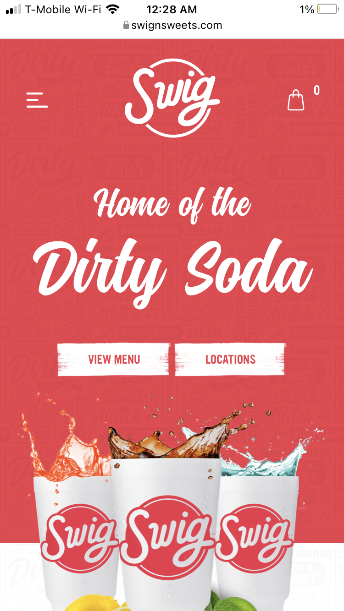

Design Principles Document
Ashley McKeehan
White Space and Clean Design
Apple
Apple is a great example of white space and clean design. They use a simple font that is easy to read, clean images, and a white background. Their clean look goes really well with their brand. Everything they sell is simple, neat, and is high quality. The white space makes everything easier to read, and helps things stand out without being too much.
Visual Hierarchy
Cotopaxi
Cotopaxi does a great job at using visual hierarchy when you first go to their page. The main picture that comes up is dark and it makes the bold words "Gear with Purpose" stand out. Your eye is imedieatly drawn to the center of the page and lets you read what they want you to know most.
Repetition
Swig
Swig's website is a great example of repetition. They use all the same 2 fonts, the same 2-3 sizes, and the same clean, bright colors both in their images and on their website. Repetition is so important because it brings unity to the site especially when there is a lot going on.